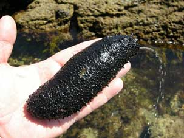
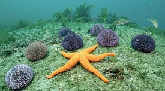
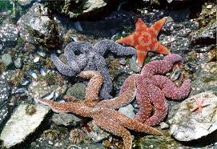
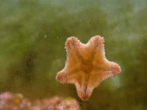
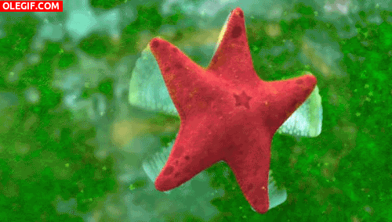

Equinodermos
Los Equinodermos, Echinodermata, son un filo dentro de los invertebrados caracterizados por poseer una simetría secundaria pentarradial que les otorga ese aspecto único en forma de estrella. Son el único gran filo no cordado dentro de la categoría de los deuteróstomos, por lo que comparten formación del ano y de la boca con los animales superiores.

Son animales invertebrados exclusivamente marinos, siendo el filo más grande sin representación en hábitats de agua dulce o terrestres. Viven siempre en el fondo del mar, en profundidades diversas que van desde la zona intersticial hasta la zona abisal. Incluyen a unas 7000 especies vivas, aunque es uno de los filos de invertebrados con una menor diversidad. Sin embargo, en este grupo se incluyen animales muy conocidos y simbólicos del hábitat marino como son las estrellas de mar, los erizos de mar, los pepinos de mar o las ofiuras.
Los equinodermos tienen gran relevancia tanto biológicamente como geológicamente. Por un lado, son de los pocos grupos de animales que pueden vivir en las profundidades marinas, además de en zonas poco profundas. Poseen una gran capacidad para la regeneración de sus tejidos, órganos y extremidades. Geológicamente, su esqueleto interno tan característico puede contribuir a la generación de formaciones calcáreas en el fondo del mar.


La reproducción de los equinodermos puede ser tanto sexual como asexual. La asexual normalmente es por fragmentación y generalmente se requiere que parte del disco central de la estrella esté en ambos fragmentos para que puedan dar lugar a un individuo completo. Sin embargo, en algunas especies con un solo brazo pueden presentar reproducción completa. La reproducción sexual consta normalmente de individuos de sexo separado y la fecundación suele ser externa. El desarrollo de los embriones es indirecto puesto que deben pasar por diversas etapas larvarias para llegar a formar el organismo adulto.
Los equinodermos se dividen en dos subfilos, los Pelmatozoos que son inmóviles y los Eleutherozoos que son móviles. Los primeros constan de una clase, los Crinoideos, mientras que los móviles se agrupan en cuatro clases: Asteroideos, Ofiuroideos, Equinoideos y Holoturoideos.
Los crinoideos, Crinoidea, se conocen popularmente como lirios de mar debido a su aspecto y a la ramificación de sus brazos.
Los asteroideos, Asteroidea, tienen un disco central y cinco brazos normalmente con el cuerpo aplanado. Se alimentan de otros invertebrados que habitan en zonas bentónicas. Son los conocidos normalmente como estrellas de mar.
Las ofiuras, ofiuroideos (Ophiuroidea), cuentan también con cinco brazos, pero más delgados que las estrellas de mar y no están conectados entre sí.
El grupo de los equinoideos, Echinoidea, son los conocidos como erizos de mar, tienen una morfología más voluminosa que las otras clases, en forma de globo y carecen de brazos. Se caracterizan por las espinas que cubren su cuerpo.
En este grupo, Holothuroidea, se incluyen los pepinos de mar, con un cuerpo alargado, sin brazos, aunque internamente mantienen sus órganos en múltiplos de cinco.
